NeuroDrop
EWOD Plate
Why EWOD?
First of all, what does EWOD mean? EWOD stands for Electrowetting On Dielectric. This is a way to move small drops over a dielectric (insulating) plate. If you want to learn theory more about it let check over there. #TODO(link)
To sum up, EWOD is a way to move small volumes such as tears. By applying a high voltage on pads under the drops the drop is distorted toward the electrified up to a point it easier for it to move onto the pad than to stay on it’s own pad.
We chose EWOD because it is a lossless solution of moving droplets. Indeed there is always a loss while pipetting a solution and, as we are working with small quantities, we cannot afford these losses. Moreover we wanted to develop an automated devices which is possible thanks to EWOD.
How to make an electrowetting plate?
In order to have a fully controllable electrowetting plate, a component capable of activating (enabling or disabling) pads one by one is needed. It is the HV507 of Microchip, or it’s soft surname according to it’s datasheet, 64-Channel Serial-to-Parallel Converter with High-Voltage Push-Pull Outputs, that have been chosen for several reasons :
- 64 channel High Voltage outputs
- Up to 300V Output Voltage
- Latched Data Outputs
- Output Polarity and Blanking
- Chainable

Which in substance mean it can deliver a high tension over 64 pads, can be piloted thanks to an arduino, can memorise it’s outputs, has an easy way on blanking it’s outputs and can be chained. The last point is very important in our case because the design of the electrowetting plate is this one :
Each color represent a different HV507. Indeed, to automate as many processes as possible, a big number of pads is needed. Blue and Red zone correspond to the zone that are temperature controlled. The orange one is for light detection and finally green and yellow one are for storage of the drops when they do not need to be at a set temperature nor need their brightness to be measured.
As you may see, each pad has a number that unique and constructed as so : “x.y” x (ranging from 1 to 5) is the identifier of the chip in the chain and y (ranging from 1 to 64) correspond to the output and thus the pad on the chip.
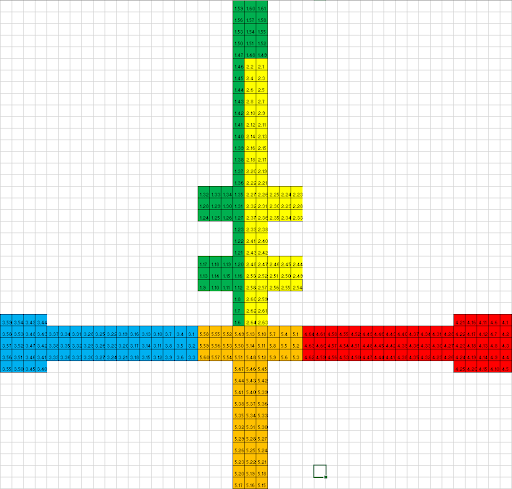
How to pilot the HV 507?
As the functional block diagram from the datasheet shows it, data flows in from DIOA to DIOB through the 64bits static shift register. The data are then shifted from the static register to the latches (mini memory) on a rising edge of *LATCH ENABLE*. Finally the outputs are *calculated* based on the content of the latches and depending of the *BLANKING* and *POLARITY* inputs. The first one is used to reset all the outputs and the *POLARITY* input is used in order to say if a *0* correspond to a high or a low voltage.
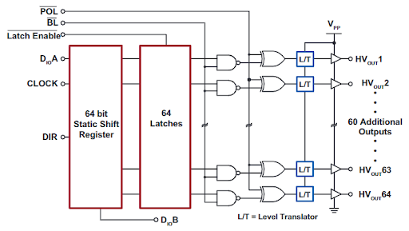
Finally, all theses component have been routed onto Kicad in order to give the following result :


What about the dielectric?
As you may now, water is most of the time conductive, which mean that if a drop overlap 2 pads, current would flow through as the drop would close the circuit which is not the effect wanted.
Dielectric is used as a protective layer over copper pads. However, this protective layer must have some particular properties:
- As the capacitive effect depend of the square of the distance between the drop and the copper pads, the dielectric must be as thin as possible.
- The drops must glide as easily as possible onto the surface. In other words, the friction force between the drop and the dielectric must be as low as possible because this mean the drop will need less energy to move.
These are the reasons why we chose cellophane paper, which is really thin and cheap, as a dielectric. Moreover, we coated it with some water repellent such as Rain-X. Finally a thin layer of nut oil is used to easen the gliding of the drop.
The Pipette - reusing a pipetting device
One of the most time-consuming tasks in the lab is to pipette samples. As this action is also paramount for the success of any operation, we have decided to automate it. We proceeded in a similar fashion than the 2018 iGEM Grenoble team, but we went a little further by separating the command of the pipette from the pipetting module.
What we started with
As said in the introduction, we based the automation of the pipette on last year’s iGEM Grenoble team. We took the same device as they did: a BioHit eLine pipette. Then we just added an electronic device that could simulate the press of a button.

A button is basically a wire that can be connected or disconnected by pressing it down. When we press the button, the difference of potential before and after the button is pressed, is zero (V2-V1=0), but when the button is not pressed the difference of potential is not zero (its value depends on the rest of the circuit).
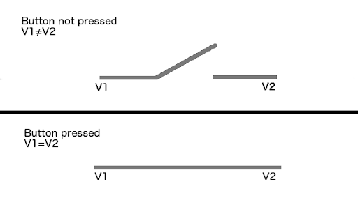
To simulate the press of a button, the idea is then to replace the buttons by an electronic component that could be switched on and off with a command board (the Arduino). By measuring the potentials on the pipette, we saw that for each button, one of the terminals was at ground potential. There are then two ways to command the pipette: either we shortcut the two terminals, or we just command the tension on the button’s terminal that is not to ground. Last year’s team decided to go with the first option. The main downside of this solution is that we need two times more cables (two cables for every button). The solution of imposing a voltage only requires one cable per button, and this is the main reason why we went with this option.
The tension we need to impose is either the ground’s tension, or another tension (provided it is superior to half of the power tension of the pipette). In our case we just had to impose either 0V or 5V compared to GND. Those two tensions are natively accessible on the Arduino board.
We decided to control the tensions sent to control the buttons through an electronic device called an optocoupler with numerical output: the H11L1. This piece of technology is commanded via the arduino and returns either 5V or 0V. Here is one H11L1:
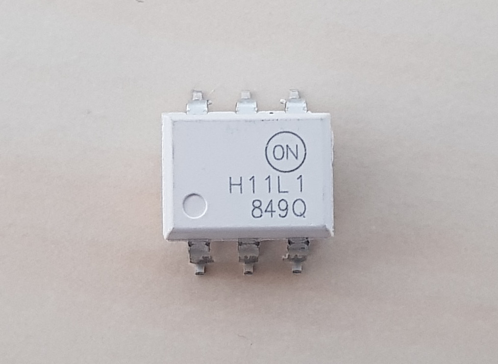
On the final board, we are using seven of them to control the seven buttons of the pipette:

Each chip is connected to two resistors. One of those resistors is meant to protect the device (the 1kΩ resistor) and the other one is called a “pull-up resistor” (the 270Ω resistor). A pull-up resistor (or pull-down resistor, depending on what it is connected to) is a resistor connected between a cable which tension can vary and a point at a fixed tension. In our case, it connects the output of the optocoupler to 5V. When the output is not commanded, no current flows in the resistor and the output of the optocoupler is therefore 5V.
How the pipette works
The pipette is a device with two main parts: an electronic board and a motor. The electronic board controls the pipette and acts as the main interface between the user and the pipetting mechanism. It is composed of a screen and 8 buttons (one of them being behind the pipette, and therefore invisible on figure 1).
The user starts by reinitializing the pipette by pressing one of the two “tip” buttons. Then he selects the volume he wants to pipette using the buttons, and then he presses the start button (in blue), the same button is used to pipette and release the liquide pipetted. At the end of the experiment, the user ejects the tip by pressing once again on the “tip” button.
The command board detects each time a button is pressed and activates the motor to pipette or eject the right amount of fluid. In order to control the pipetted volume, the pipette uses a crenellated wheel. This wheel is placed over a LED fixed to the motor, and turns in front of two phototransistors on the command board. The signal received is then transcribed into steps for the command board so that the pipette knows precisely the amount of solution it has pipetted.

What we did to automatize the pipetting
As we mentioned earlier, we can replace all the buttons by optocouplers. This allows us to automate the pressing of the buttons.
We also decided to separate the electronic board of the pipette from the motor so it would be easier for the motor block to move. In order to do this, we had to desolder the phototransistors behind the electronic board of the pipette and create a secondary board where to put the phototransistors, that would then sit right above the crenned wheel and the LED.
This being done, we designed a new case both to protect the motor and to fix it securely to a rail that moves vertically.

In order to move the pipette, we will use a mechanism that will transform the movement of a motor into a linear movement. The movement is transformed from a circular movement to a linear one thanks to a screw-nut mechanism.
In order to make the movement steadier, we added two bars to guide it.
The pipette will be fixed both to the rails and the screw via a nut, thus allowing it to move only in one direction.
More information on guiding the pipette will be given on the “structure” part of this wiki.
Algorithm to automate a pipette
In order to control the pipette, we have first to identify the different actions performed to pipette a sample. This protocol will then be translated into a sequence of actions that the hardware will perform when the order is given by the software.
| BEGIN | |
|---|---|
| The user enters the solution he wants to pipet from | The user chooses a predefined protocol |
| The user enters the volume he wants to pipet | |
| The pipet is reinitialized (by pressing on the “reinitialize” button and then the “tip” button) | |
| The volume that the user defines is applied to the pipet (by pressing a certain number of times on the “+” or “-” button, and then by pressing the “enter” button) | |
| The pipette is placed over the tip used to pipet into the desired solution | |
| The tip is placed on the pipette (by lowering the pipette and then raising it again) | |
| The pipet is placed over the solution we want to pipet from | |
| The solution is pipetted (by lowering the pipette, pressing on the “start” button, and then raising the pipette again) | |
| The pipette is moved to the EWOD plate | |
| The solution is dropped on the EWOD plate (by lowering the pipette, pressing on the “start” button, and then raising the pipette again) | |
| The pipette is moved over to where it first took the tip | |
| The tip is ejected (by lowering the pipette, pressing on the “tip” button, and then raising it again) | |
| The pipette is moved over to its first position (over the EWOD plate) | |
| The initial volume (5µL) is applied to the pipette (by pressing a certain number of times on the “+” or “-” button, and then by pressing the “enter” button) | |
| END | |
Conclusion on the method
This method is functional but shows one major downside: we don’t really know what is happening inside the pipette. Therefore we can’t really offer any ways to repair the device if anything happens to it.
This is why we decided to implement a second device, using a different pipetting method that is a little less precise but much easier to repair in case of failure: peristaltic pump. This second device, that we finally adopted for the final dispositive, is presented on another page of this wiki.
The Pipette - using a peristaltic pump
We have seen on another page of this wiki how we could use an automatic pipette in our device. However this solution shows one major downside: we don’t know how the pipette really works. This means that in case of failure, nothing can be done.
Another downside of repurposing a used automatic pipette is that it is not made for this use and although it works, the way we make it work is far from being perfect and would never suit a classic laboratory device.
For all those reasons, we had to develop another solution for pipetting the solutions. This is why we created a pipetting device using a peristaltic pump.
Peristaltic pumps
A peristaltic pump is a device that can pump fluids using a motor that will press a tube. The idea is that by moving the pressure point, the pressure inside the pump will vary and entail a movement in the fluid.
Those pumps are common on laboratory devices, mainly to inject precise amounts of solution into other solutions automatically. They are also used in cardiopulmonary bypass.
In our case we want to create a system that will pump a precise amount of solution. Before anything let’s model our solution.
Model
Before developing this solution, we created a theoretical model of the device. The idea of this model is to get a good idea of the precision we expect from this device, and to validate its use in our system.
The first step is to fix the different parameters of the pump. Let’s therefore create a schematic of this device:
Method
The different interesting parameters in this model are:
- The inner diameter of the tube (represented in sky blue on the schematic)
- The length of the tube at the pumping section (the length of the tube that is bent)
- The precision with which we can turn the pumping system (represented in green on the schematic)
- The length of the tube between the pumping mechanism and the surface of the solution to pump
The physical parameters to take into account are:
- The power developed by the pump
- The compressibility of the air (we are pumping the fluid by playing with the pressure of the air inside the tube)
With those parameters taken into account, the idea is quite simple:
- First we approximate the volume that can be pumped at minima
- At this point we’ll be able to give a theoretical precision to our device, and therefore validate its use.
- Then,we look at the force that the motor needs to apply to pipette a solution
- From there we get an idea of the power that the pump needs. This will allow us to validate the choice of the pump.
- To finally validate the device, we’ll pipette volumes with it and compare them to volumes pipetted with conventional pipettes. We’ll compare them using very thin columns and compare the height of the solution.
Parameters of our device and physical considerations
In our case we used a tube with an inner volume of 3mm. The length of this tube is 4cm. The pump is connected to a step-motor (NEMA 17) that will be driven in microstep mode. This means that we’ll be able to control the motor with a precision of 1/6400 of turn. In terms of degrees this is is equal to 0,05625°. The length of the tube between the pumping mechanism and the solution is of 4cm.
To get to the compressibility of air, we usually approximate the air to an ideal gas. This means that we will consider that the pressure, the temperature, the quantity of gas and the volume of the air will be linked by this formula: \(pV=nRT\) This model is close to reality at atmospheric pressure and normal temperatures. With this model, we get to the following expression of the compressibility of air (isothermic): $$\chi_T = \frac{1}{V}\left(\frac{\partial V}{\partial P}\right)_T = \frac{P}{nRT} \frac{nRT}{P^2} = \frac{1}{P} $$
Now, when we consider our device, the maximum we might need to pipette is 20μL, which. This means that the increase of pressure due to the presence of the solution will be of \(20mg*\pi*(3mm)^2=0,05Pa\). This means that the variation of pressure in our tube due to the presence of the solution will be 6 orders of magnitude lower than the atmospheric pressure. It is therefore neglectable. In fact, the error we make with this approximation is of the order - in our application - to (at most) \(210^{-5}\mu L\).
Now let’s see how low we can pipette with our device.
We said that we had a tube 4cm long, of an inner diameter of 3mm. This means that the volume of the tube at the pipetting position is \(1130,94 mm^3=1130,94 \mu L\). Now, we know that we pipette all this volume in half a turn (it’s obvious when referring to the schematic). This means that we can pipette with a precision of 1/3200 of this volume. This leads to a precision of 0,35μL.
As we need to pipette solutions which volume varies from 10 to 20μL, we are precise enough.
Now let’s look at the pump itself. In the case where we had to pump 20μL at once, we would need to exert a force of around \(20mg*9,81m*s^{-2}=0,1962N\). The drivers that we are using needs around 1μs to perform a step. This means that to pipette 20μL, we’ll need around 57 steps, that is 57μs leading to a needed power of \(0,196N*0,7mm/57µs = 2,4W\). This is way under the power that we can deliver to our motor (we tested the device with powers ranging from 5 to 24W).
Conclusions on the model
What we can conclude from this model is that our device allows us to pipette the volume of solution we want with an error of around 0,35μL. If we want to pipette 10μL, this represents a relative error of 3,5%, which is more than acceptable for what we want to do.
Possible improvements
One simple way to increase the precision in our device is by adding a reductor between the motor and the peristaltic pump. With a simple 1:10 reduction, we would achieve precisions of 35nL.
Final result
We described on the software part of the wiki, how we were making the Arduino pipette a solution. We chose not to modify the software to develop this solution. Changing the software on the computer was one simple solution, that would have only asked to replace a few lines, but we decided to test the adaptability of the command board’s program.
We therefore only modified the code written on the Arduino. This modification asked us to replace around 10 lines. This proved to us that we could easily adapt our program.
This was one of the goals of this project: create an open-source project that could be re-used as a complete basis for any new autonomous machine.
In terms of pipetting, here are the tests we did.
We can clearly see that the volume of solution being pipetted by a controlled pipette and by our device are indistinguishable. This proves that our system works, and represents a real alternative to other pipetting systems.
Temperature control
To ensure that the bacteria do their job in detecting the biomarker, they need to be in a temperature controlled medium. The protocols we are using, require a constant pre-fixed temperature, therefore, we are going to control the temperature of the EWOD plate on which the experiments take place.
Control process
So that the temperature of a zone is maintained, we are using a loop control system. The user enters a temperature as a set point or uses the pre-defined protocols that contain the temperature set points. The system then adjusts its variables automatically to maintain the set point through the feedback loop. The heating and cooling of the zones is done using peltier modules.
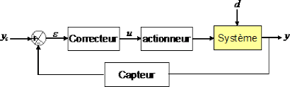
Peltier modules
The actuator used to heat up or cool down the zones is a Peltier module. It is a thermoelectric heat pump; it transfers heat from one side to the other depending on the direction of the current passing through it, using electrons as the heat carrier. It works based on an effect called, Peltier effect, which was discovered by the French physician Jean-Charles Peltier in 1834. The module consists of two different conductors linked by two junctions, when a current passes through one conductor, a thermic flux appears and starts to heat up one electrode and cools down the other; this phenomenon is related to the flow of entropy. Peltier modules are small, compact and can deliver stable temperatures, which makes them perfect for our application.

Temperature sensor
To measure the exact temperature of the zone, a temperature sensor is used. The chosen sensor is TMP1075. It is an integrated circuit that uses a thermo-resistor, which delivers a digital data that can be interpreted as the surface temperature by an Arduino code. The sensor is placed on the temperature-regulated zone, to have a maximum accuracy. The integrated circuit has an on-chip 12 bits analog-to-digital converter that provides a resolution of 0.0625°C. The data is delivered to the Arduino card via the I2C bus, where it can be processed.

PID controller
Once the temperature of the surface is measured, it is then compared to the set point. The output voltage to be delivered to the Peltier module is computed according to that temperature difference. The calculations are done by a digital PID controller (proportional-integral-derivative action). The coefficients of the PID are tweaked to have an optimal result in regards to the stability, rapidity and precision of the system. The PID delivers an integer that can be positive or negative to indicate in which direction the current must flow and the power to deliver.
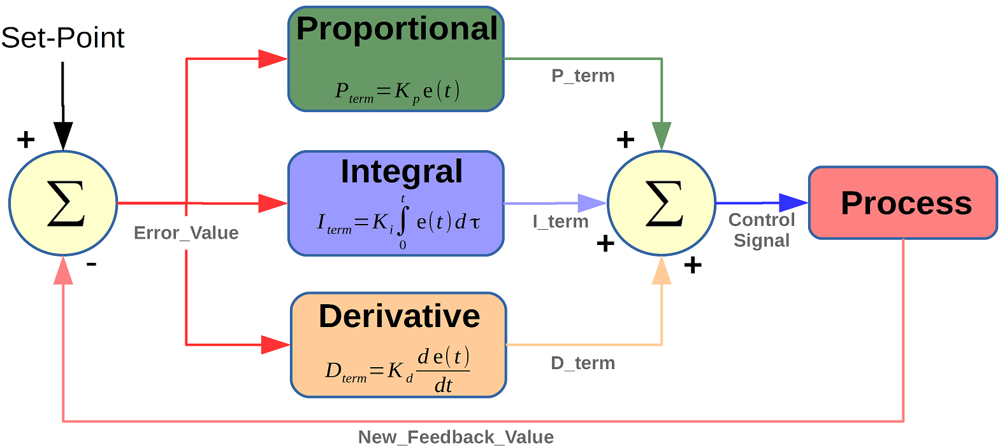
Peltier control : H bridge
These instructions are given to an intermediate circuit that manages the voltage and the current’s direction. This circuit is called an H bridge (in our case we used the L6206). It is an integrated circuit that from a voltage ranging from 8V to 27V, delivers an output voltage that will be proportional to the instruction given by the Arduino with the corresponding current direction. This allows us to control the power sent to the peltier modules, on average, and during short periods of time. This way the peltier module will heat up or cool down the zones to match the set temperature.
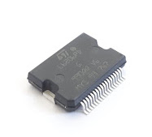
Overall conclusion
These instructions are given to an intermediate circuit that manages the voltage and the current’s direction. This circuit is called an H bridge (in our case we used the L6206). It is an integrated circuit that from a voltage ranging from 8V to 27V, delivers an output voltage that will be proportional to the instruction given by the Arduino with the corresponding current direction. This allows us to control the power sent to the peltier modules, on average, and during short periods of time. This way the peltier module will heat up or cool down the zones to match the set temperature.
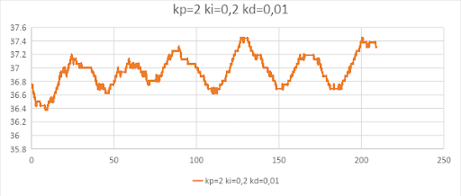
Light detector
Photomultipliers
Photomultipliers used to be very expensive devices which required thousands of Volts to amplify photons.
The evolution of semiconductor physics has led to the creation of similar devices in their characteristics, without the need of very high voltage, and with more reasonable prices. Built on silicon, theses are called Silicon Photomultipliers (SiPM). Those devices are usually much cheaper than the former tube photomultipliers, as the one we used costs around $60, which is actually cheaper than some cameras. Another advantage of using this kind of device is their size: a SiPM usually presents itself as a square of a few millimeters side length.
A Silicon Photomultiplier converts light into an electrical current. This is done by creating electrons with incident photons. Those electrons will then move in one direction, imposed by the tension applied to the SiPM. The movement of the electrons will lead to collisions with other electrons, thus creating larger flux of electrons. This phenomenon is called quantum quench.
The conversion of the light into a current is done with a specific type of material called a semiconductor. A semiconductor is a material that alone acts as an insulator but that is close to being a conductor and that can effectively become one if put in the right electromagnetic conditions.
Using the right configuration, light can be used as an activator to modify the semiconductor so it becomes conductor. This leads to a flux of photons inducing a flux of electrons. This phenomenon is used in phototransistors. With photomultipliers something similar is done: a flux of photons is converted into a flux of electrons and then amplified using quantum quench.
Current detection
The SiPM creates an electrical current proportional to the light received. Therefore measuring this current is directly equivalent to measuring the brightness of the bacteria.
The component used to perform this measurement is a current sensor from TI, the INA226. It has been chosen because :
- It can measure a wide range of currents as its architecture allows versatility with an integrated digital amplification
- It is a digital sensor, which means it samples by itself and sends the data to the arduino via I2C (a communication protocol)
- It can sample the data much more precisely than the Arduino: it samples on 16 bits where the arduino samples on 10 bits. This means it can distinguish 65536 values where the arduino could only see 1024. This explains the use of this component for our device.
- It has a very low bias current. This means that, by construction, the current needed to power the component won’t disturb the measurement.
- It can average up to 1024 values before storing data into its registers (this means that we can linearize measurements, and reduce the impact of the noise)

How does this work?
The current emitted by the SiPM goes through the Shunt resistor (Rshunt) that has a known value. As the current measurement need to be very precise, very precise resistor have been chosen (with values accurate to 1% when usual resistors have 10% accuracy especially on low value).
The INA226 measures the voltage drop due to Rshunt and stores it in its voltage register. As it has been initialised, it knows the value of Rshunt and thank to Ohm’s law, it can compute the current passing through : \(I_{SiPM} = \frac{U}{R_{shunt}}\)
Finally, the data is requested by the arduino through the I2C connection and thanks to the arduino library INA2XX. Data can then be stored for further analysis.
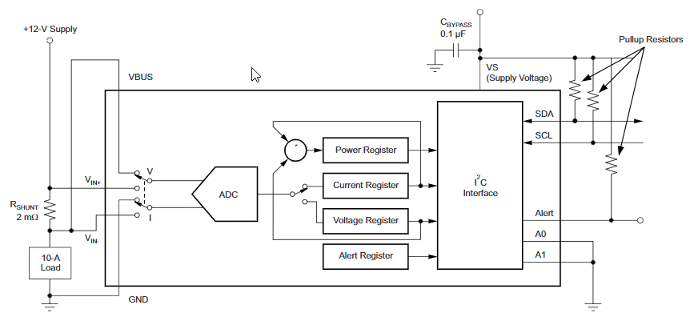
Conclusion and overall strategy
As it has been shown, in order to detect the signal emitted by the bacteria, a very sensible sensor called a Silicon Photomultiplier (SiPM) needs to be used. The signal it returns is a current that will be measured thanks to a current sensor : the INA226. Finally, the data can be treated on your computer using NeuroDrop’s software.
Command Board
The hardware we have made during this project deals with a lot of individual components, all electronic, that are piloted via an Arduino Mega. In most projects using this kind of device, PCB’s called “Shields” are developed to simplify the command of the various elements and to reduce the space taken by the electronic part.
Developing the command board
The goal of the command board is to command a series of individual components with a unique command board. The first thing to do is therefore to command each individual components separately. This is done amongst other things using breadboards. Here for example we are controlling the pipette individually using a breadboard and an Arduino Uno (it is another command board that works just like the Arduino Mega but has less pins).
Once each circuit is working individually, we “just” have to assemble them. This is first done developing a coherent electrical scheme. For this project we used the Kicad software which is free to use. Here is the scheme of the command board:
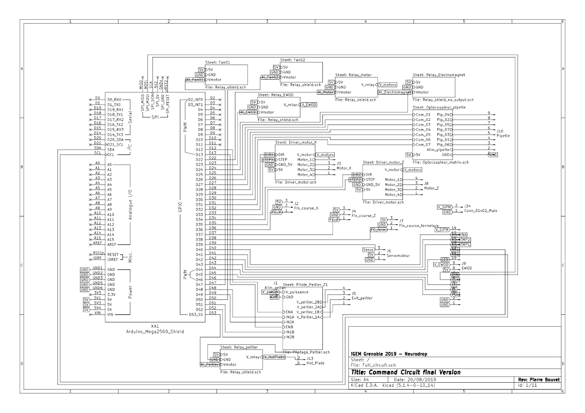Individually all the connections are relatively simple but as a whole, the system is quite complex. This complexity is increased by the fact that all the connection must be placed on a single double-face PCB board. Here again we are using Kicad to create the PCB.
The composition of the command board
Once we have created the electronic circuit, we need to organise the different components. The disposition of the components has to take into account the accessibility and the relative position of the different parts. For example, the power supply of the motors should be next to the drivers, so that we need a shorter cable to link the two. Here is the back of the command board on schematics and without the circuits:

On this face we have the temperature control. This control is done through a H-Bridge, as described on the temperature control page on the Wiki. The H-Bridge is the chip marked with the L6206PD, it is connected to a series of resistors (marked 5kΩ, 100kΩ and R) and a series of capacitors (marked 5,6nF, 10nF, 100nF and 220nF).
Here is the front of the command board:

On this side we have most of the connectors, and most of the components. Each of the connectors is marked both on the schema and on the real plate. Those connectors are:
- Peltier Exit: it connects to the two peltier that regulate the temperature.
- SiPM Alim: the alimentation of the SiPM sensor (27VDC - 15mA)
- Mag Relay: this connector activates the electromagnet that ensures that the system is closed.
- Peltier Alim: the alimentation of the Peltier (12VDC - 2A)
- Fan1 Relay: the relay that activates the fan under the first peltier.
- Fan1 Alim: the alimentation of the first fan (12VDC - 10mA)
- Fan2 Relay: the relay that activates the fan under the second peltier
- Fan2 Alim: the alimentation of the second fan (12VDC - 10mA)
- Plate Relay: the relay that activates the heating of the plate
- Plate Alim: the alimentation of the plate
- Plate: the output that goes toward the plate
- MotorX: the exit alimentation for the X motor
- MotorZ: the exit alimentation for the Z motor
- Servomotor: the output that goes towards the servo motor in order to open or close the hole so that the pipette can drop the solution onto the EWOD plate
- Motors Alim: the alimentation of the motors (24VDC - 1A)
- Motors Relay: the relay that activates the alimentation of the motor
- EWOD Alim: the alimentation of the EWOD plate (300V - 10µA)
- EWOD Relay: the relay that activates the alimentation of the EWOD plate
- Sensor Close: the input of a sensor that sees if the device is closed or not
- Sensor X: the input of a sensor that tells if the plate is at the initial position
- Sensor Z: the input of a sensor that tells if the pipette is at the initial position
- Pipette Exit: the output with the signals going towards the pipette
- EWOD Exit: the connector that
On this plate we also have two chips (DRV 88 25) that control the two motors. Those chips are presented in more detail in the motor part of the wiki.
We also have 7 H11L1 chips. Those chips are controllable switches and they will be presented in more detail on the pipette part of the wiki.
There is also a capacitor placed on the board. This component is used to help the pipette work properly. This will also be presented in more detail on the pipette page.
Dealing with power
Now that all the components are placed where we want them to, we need to think about tracing the circuit. This might seem quite straightforward but we have to take into consideration the type of signal we are exchanging between the components. The biggest threat for the board at this time is to use a path width too small to link two components exchanging power. Because of Joule’s effect, a current flowing through a cable heats it. This can potentially damage the board or the components if not taken into account. The solution we went for, was to trace the circuits that would require power, without taking into account the width of the cable, then look at the length of the cable we just traced and then input it into a software called Pcb Calculator. This software takes into account the length of a path, the maximal increase in temperature desired, the thickness of the path, the type of conductor used, and returns the minimal width of the path we have to choose. In our case, we needed paths that would be at least 0.3mm wide to have an increase of temperature of the cable inferior to 10°C. Then it is just a matter of changing the width of the cable we traced to be sure that no trouble will come from the heat generated by the current flowing through the cables.
Linking all the components
Now that we have all our components placed where they have to be, and that we have placed all the circuits needing power, we just need to link the remaining components. There are two ways of linking the components: by hand, linking them one by one, and by using an algorithm called “auto-router”. This algorithm finds the best configuration of paths to reduce the length of the paths. We went with the algorithm to route the remaining components. This is the result we got for the back side:

This is the front side:

All the components have been marked to facilitate the assembly once the board is printed. Those markings appear in turquoise on the boards but are printed in white on the PCB. We also notice that a lot of routes seem to end at no component. That is because the algorithm used to trace the circuit uses “vias”. Vias are holes in the circuit that connects the two sides. This allows the circuits to cross without interfering one with the other.
Final result
Kicad has a very useful tool: a 3D rendering software. This allows to have a first impression of the end result, that is after impression. Here are the rendering using Kicad:
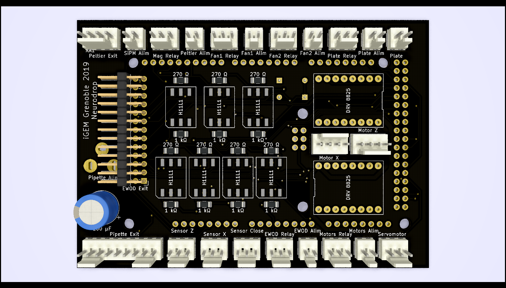And here is the real board, with all the components assembled:

The real board is positioned over the Arduino Mega and the two drivers are also placed where they must, that is why there is a slight difference between the 3D model and the real board.
Motors
In order to move the pipette and the plate, we have decided to go with a system of screw-nut that is commanded via motors. The motors used in the prototype are step-by-step motors. That means that we specify their position via the number of steps they have to turn (each step is a fraction of a turn). The motors that we are using are the NEMA 17 motors, which are very affordable and easy to work with. Each motor is controlled via a DRV 8825 module. This module is also very affordable and is easily controlled with an Arduino.
The step motor
A step motor is a device that allows an axis (the rotor) to turn inside another piece (the stator) by increments. All electrical motors run with the same principle: an electrical current that circulates into a conductor generates a magnetic field. This means that by coiling a cable and by flowing a current inside, we can generate a strong magnetic field. This also means that when no current is applied, no force is applied. The idea in a step motor is to use multiple needles that will act as the rotor and to move them step-by-step by applying a current on different coils in the stator, placed strategically. Here is a modelisation of a rotor, with the two polarities of the magnets colored differently and all the magnets attached to a core that will act as the axis of the motor.

The idea in a step-by-step motor is to use a different number of coils than magnets in the stator. In our modelisation we have used six magnets (or three linear dipoles), we will use height coils:
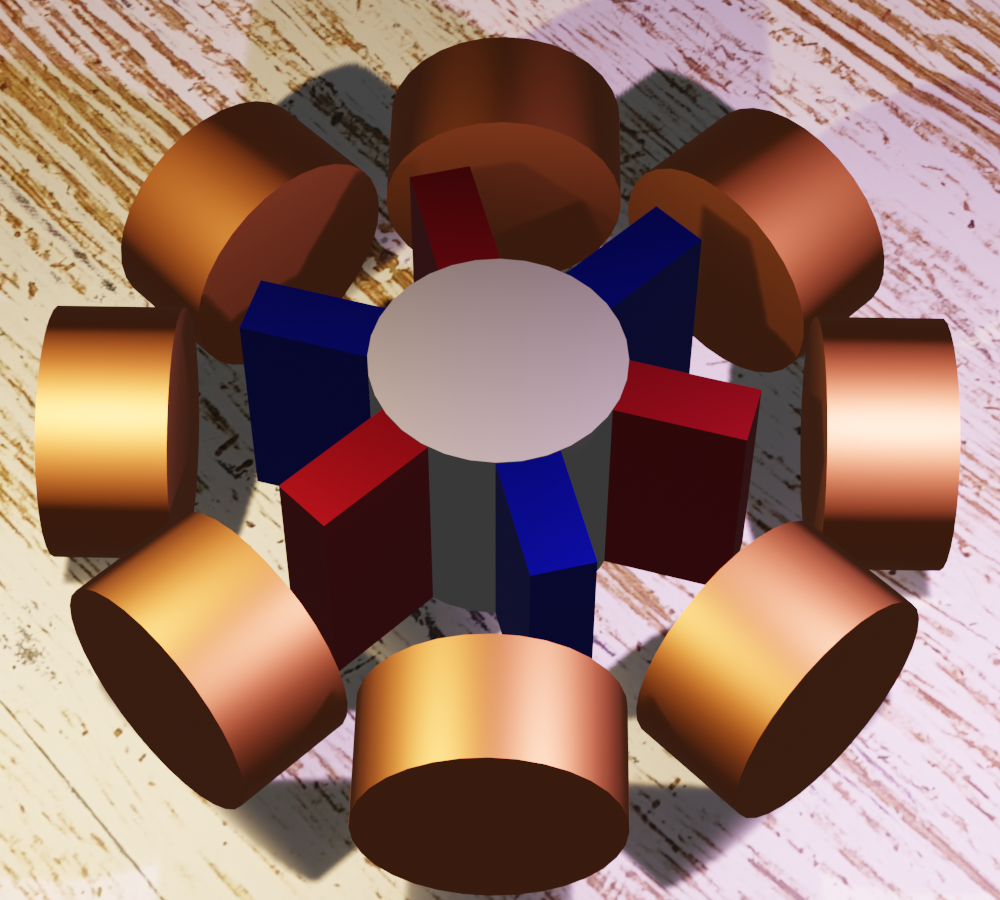This arrangement of coils ensures that there are no stable position for the motor, or in other words that there are no positions of the rotor compared to the stator that does not allow us to move the rotor. Then, the system will work as magnets aligning each other one on the other. The north pole of a magnet will align with the south pole of another magnet and vice-versa. So, in our motor we will power two opposite coils symmetrically. This can be done by sending the same current into the two coils, provided that they are coiled around the same axis, in the same direction. When the current passes through the coil, the coil appears as a magnet to the rotor.
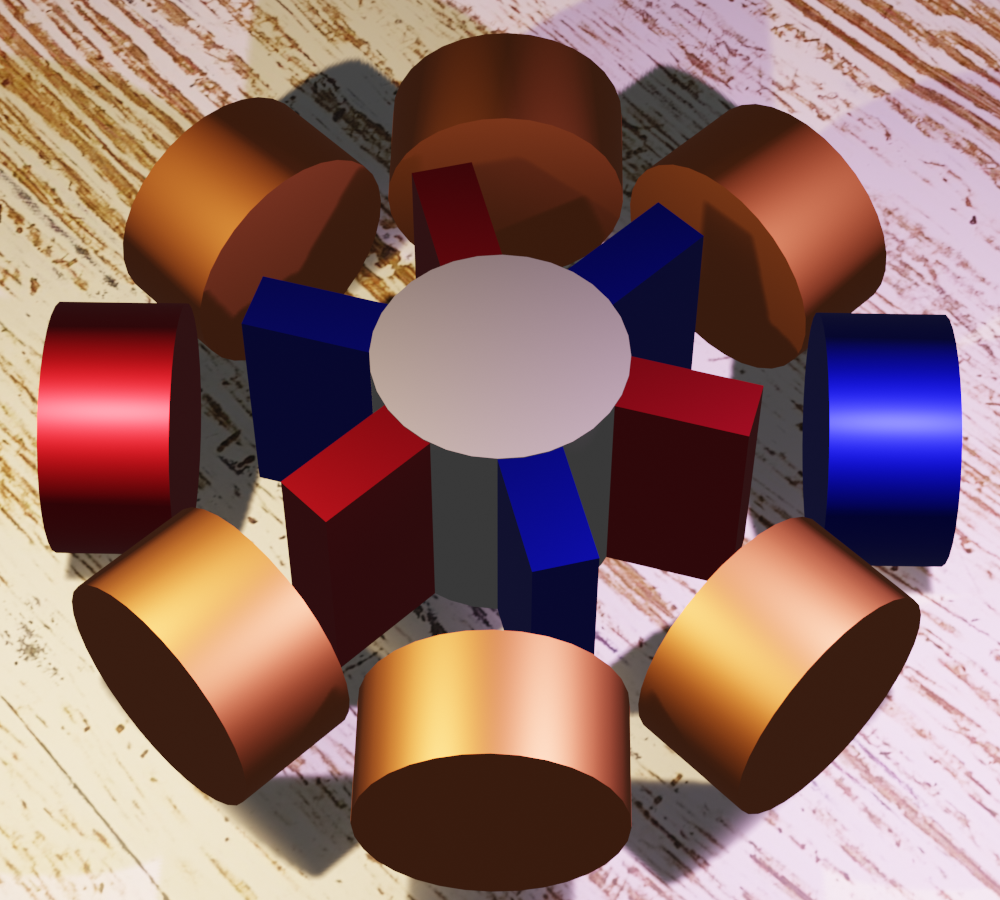As said before, the north pole of a magnet will be attracted by the south pole of another magnet and repelled by its north pole. This will lead to a movement of the rotor to align with the coils in the stator:

Then it’s just a question of activating the right coils to turn the rotor (in our case with a step of 15° or /24rad)
In our modelisation, each step allows the rotor to turn 15°. In the Nema 17, each step allows a rotation of 1.25°. This is due to a larger number of magnets on the rotor.
Controlling a step motor
As said in the introduction, each motor is controlled by a DRV 8825 module. This module is an interface between the command board and the coils. The Arduino sends the command for a step, and the chip activates the next coils so that the rotor turns one step.
The Arduino also controls the way the rotor turns.
The DRV 8825 shows an interesting characteristic: it can be configured to drive the motor in microstep mode. This means that the motor is not controlled directly step by step but fractions of steps per fractions of steps. This allows us to reduce the noise that the motor does when turning.
The microstep function is a function that activates not one but two coils at a time, with different currents. The magnetic field will as such vary in space and its maxima will be between the coils, and defined by the current flowing through each coil (the magnetic field is additive).
Technically, the algorithm to control a step motor is then as follows:
- We tell the motor which way we want him to turn
- We tell him when a step is due
- We wait for the rotor to turn (a few microseconds)
- We repeat the last two steps until we reach the number of steps we desired to make
In this algorithm we are controlling the motor through the number of steps it has to perform. This is one of the two ways we are controlling the movement of a motor. The other way is moving the motor until it reaches a point where we detect its position. This second method is used to reinitialize the position of the motors. This reinitialization is obtained after the transmission of the circular motion onto a linear motion.
Transmission of a circular motion onto a linear motion
The most common way to convert a circular movement onto a linear one, is to use a screw-nut system. The screw turns into the nut, thus creating a linear movement of the nut by applying a circular motion on the screw.
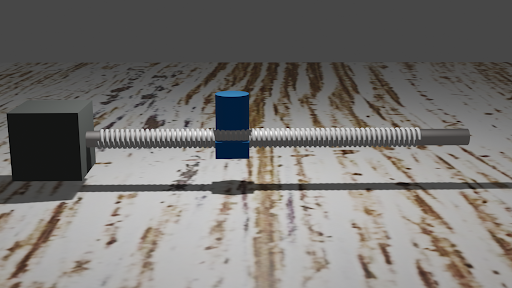Each full turn of the screw allows the nut to move a fixed distance. In our case, each full turn of the motor allows the nut to move 0.4cm. Added to that the fact that we can control the turning of the motor with a precision of 1.5°, it means that we can control the position of the nut with a precision of 17µm, which is much more than we really need for our system. This being said, it can happen that the motor does one step more or skips one step when being commanded. This error can be neglected if the movement is relatively small but accumulated on all the movements that both the plate and the pipette will have to perform, it can become a real problem. This is why we added sensors at strategic points that allow us to tell if the motor is at his right position or not. Those sensors are basically switches: when pressed they send a value through one cable and when released, they send another value. As we will control their position with an Arduino, the easiest way to pilot it is by piloting it between 0V and 5V, both imposed via the Arduino.
There are two sensors on the device. One sensor is used to define the position of the pipette when it is at its highest position. The other one is used to recognise the point where the pipette is over the dropping hole. Those two sensors allow us to be sure of the position of both the plate and the pipette and they act as initializing sensors. The whole algorithm is built so that they are activated regularly to verify the right positioning of the different elements.